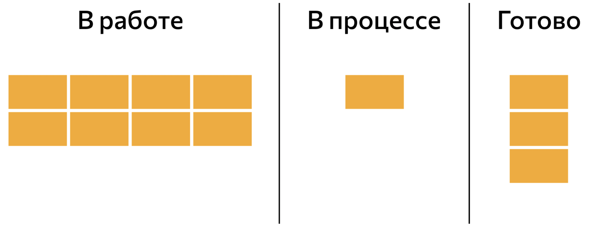

Scrum
Brought to you by Anna Tsvetkova

Yours Truly, Famous Inc.
Brought to you by Anna Tsvetkova
Scrum — методика организации совместного рабочего процесса, в основе которой — поэтапная разработка и совершенствование продукта небольшой командой специалистов различного профиля. Scrum изобрели программисты Джефф Сазерленд и Кен Швабер. Они наблюдали за работой американских военных и спецназа и пришли к выводу, что в основе успеха лежит качественная командная работа. Сам термин пришел из регби и переводится с английского как «схватка».
Сначала подход использовался среди разработчиков, а затем получил распространение в других сферах бизнеса. Scrum относится к семейству гибких Agile-методик. Часто эти два понятия используются как синонимы, но это некорректно. Scrum — это частный пример Agile-подхода. Он представляет собой конкретную производственную методику, в то время как Agile является скорее философией или набором ценностей.
Подход отличается гибкостью и позволяет экспериментировать, поэтому эффективен, когда нужно быстро разработать новый продукт. Особенно если отсутствует итоговое видение результата или слишком часто меняются условия на рынке. Scrum помогает постепенно идти к цели и на протяжении всего пути контролировать эффективность проделанной работы.
Основная цель подхода — дать заказчику желаемый продукт вовремя и с минимально возможными затратами. Ее помогает достичь соблюдение следующих этапов работы.
Владелец разрабатывает концепцию продукта с учетом ситуации на рынке, потребностей пользователей. На основании этого составляется перечень требований к проекту, которые распределяются по приоритетности. Готовый бэклог — это техническое задание для команды.
Подход отличается гибкостью и позволяет экспериментировать, поэтому эффективен, когда нужно быстро разработать новый продукт. Особенно если отсутствует итоговое видение результата или слишком часто меняются условия на рынке. Scrum помогает постепенно идти к цели и на протяжении всего пути контролировать эффективность проделанной работы.
Scrum-команда — единое целое. В проекте участвует небольшая группа специалистов разного профиля (6–10 человек). Они работают на общий результат и стремятся к одной цели. В общем виде Scrum-команда включает:
Спринт — период, в течение которого команда создает и совершенствует отдельную часть продукта, чтобы быть готовым к изменениям условий и исключить глобальную доработку. Каждый спринт начинается с планирования. Вся команда, включая владельца продукта, Scrum-мастера и разработчиков, изучает бэклог продукта. На его основе составляются задачи, которые необходимо выполнить в пределах одного цикла. Так формируется бэклог конкретного спринта.
Возможны три исхода:
Ежедневно вся команда собирается не более чем на 15 минут. Цель встречи — услышать от каждого участника ответ на три вопроса:
На основании этих микроотчетов Scrum-мастер старается понять, так ли идет рабочий процесс и как помочь команде преодолеть препятствия.
Команда использует физические либо программные доски, пространство которых разделяется на части, отражающие стадии работы над продуктом. Их количество может варьировать, но обязательно включает в себя три составляющих (слева направо):
Доска — это визуальное отображение рабочего процесса на разных стадиях. С ее помощью каждый член команды может контролировать свою работу и следить за проектом.

Оценка гибкости процесса и тестирование продукта проводятся после каждого спринта. Если проверка показывает несоответствие полученного результата желаемому, команда может быстро скорректировать стратегию разработки или пересмотреть бэклог.
В конце цикла вся команда, включая владельца продукта и Scrum-мастера, собирается для демонстрации результатов работы за отчетный период. Каждый разработчик показывает завершенные задачи из бэклога. Владелец принимает решение, выпускать его или нет. Кроме того, проводится ретроспектива рабочего процесса за прошедший период. Участники команды делятся наблюдениями, проблемами, с которыми столкнулись, оценивают уровень взаимоотношений с другими членами, используемые инструменты.
Должны соблюдаться основополагающие принципы:
Сама по себе методика Scrum проста. Понять правила, артефакты, мероприятия и роли несложно. Она задает структуру, но в ней есть свобода выбора, которая исключает белые пятна в процессе разработки и позволяет в должной мере учесть специфику разных компаний.